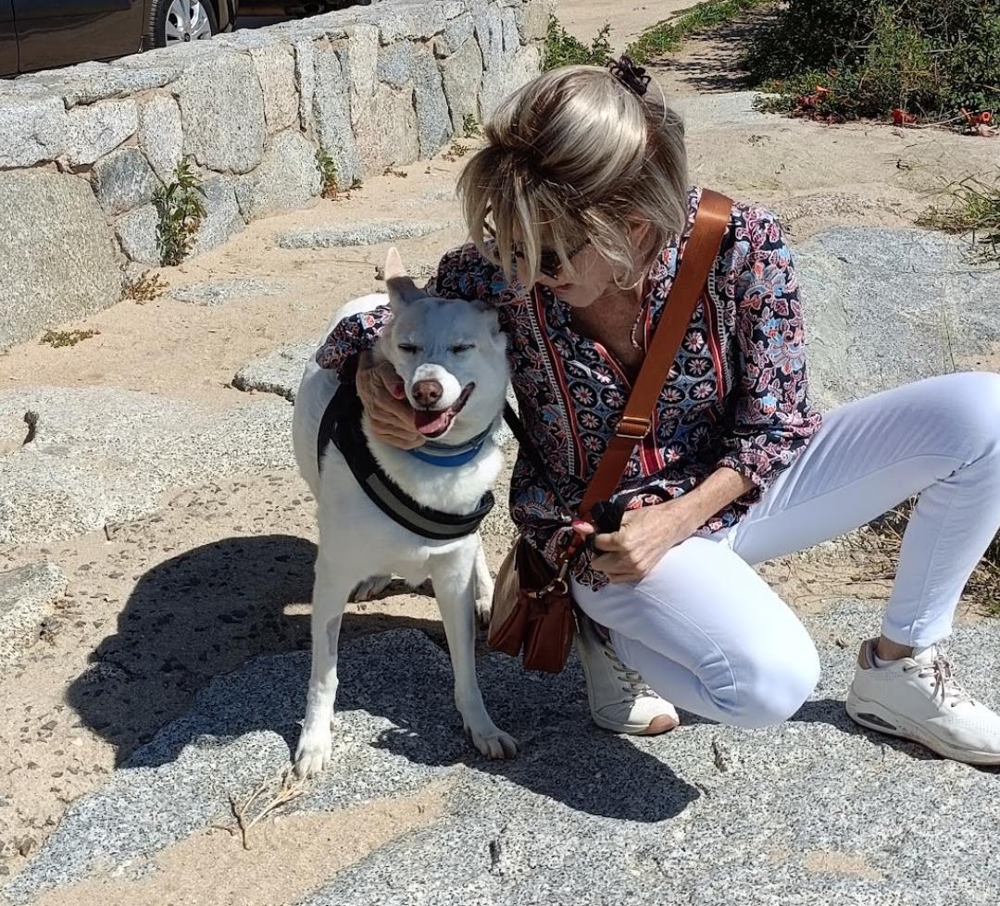

Rescatamos
Damos una segunda oportunidad.
Un hogar puede cambiarlo todo
Rescatamos, cuidamos y buscamos hogares para animales que también merecen ser amados.
Un mundo mejor también es posible ♡

Damos una segunda oportunidad.
Atención veterinaria y mucho amor.
Familias para toda la vida.
Un mundo más compasivo.
Conoce a algunos de los peludos que buscan una familia.
Cargando animales desde Animales.xlsx…
Hay muchas formas de cambiar una vida.
Tu aportación nos permite seguir rescatando y cuidando.
Quiero donarParticipa en la rifa y ayúdanos a financiar tratamientos médicos
Ver la rifaUn hogar temporal marca la diferencia.
Más informaciónAyuda a un animal en su proceso de recuperación.
Apadrinar ahoraDetrás de cada rescate hay una historia de valentía, esperanza y amor.
Vida llegó a la asociación siendo cachorro, tras recibir un disparo que le impidió mover las patas traseras. Con atención veterinaria, una operación y rehabilitación, inició un camino de recuperación acompañado por personas solidarias.
Leer la historia completaAdoptar no cambia el mundo, pero sí el mundo de un animal